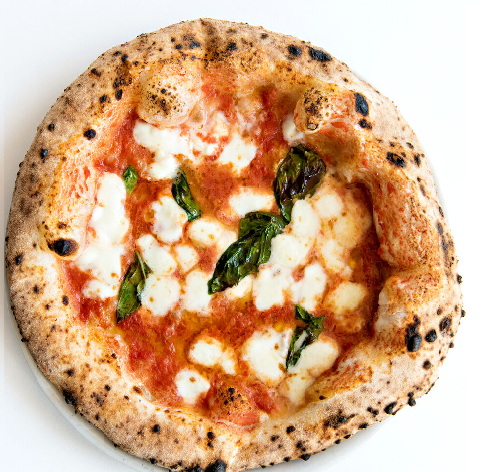

il cibo più conosciuto al mondo...

La pizza è un cibo molto mangiato nel mondo.
La pizza è un prodotto gastronomico italiano. Pietanza e parola italiana più conosciuta nel mondo, dal gusto dolce o salato, di forma piatta o rialzata e spesso tondeggiante, ricavata da un impasto di farina e acqua.
La pizza napoletana è l'unico tipo di pizza italiano riconosciuto in ambito nazionale ed europeo. Dal 4 febbraio 2010, infatti, è ufficialmente riconosciuta come Specialità tradizionale garantita dell'Unione europea. Essa si presenta come una pizza tonda dalla pasta morbida e dai bordi alti (cornicione). Tale rigonfiamento della crosta è dovuto all'aria, che durante la fase di manipolazione del panetto si sposta dal centro verso l'esterno. Nell'impasto classico napoletano non è ammesso nessun tipo di grasso. Soltanto acqua, farina, lievito (di birra o naturale) e sale.
L'etimologia del sostantivo pizza (che non è necessariamente legata all'origine del prodotto) è dibattuta. Esistono varie ipotesi, tra cui la derivazione da pizzo e questo, a sua volta, associata all'idea di "punta". Altre ipotesi sono che derivi da picea (placenta) come calco del greco antico πίττα, pítta. Si è pensato anche a una derivazione dal germanico (longobardo o gotico) dell'alto tedesco d'Italia bĭzzo-pĭzzo (da cui anche in tedesco moderno Bissen: "boccone", "pezzo di pane", "tozzo di focaccia")